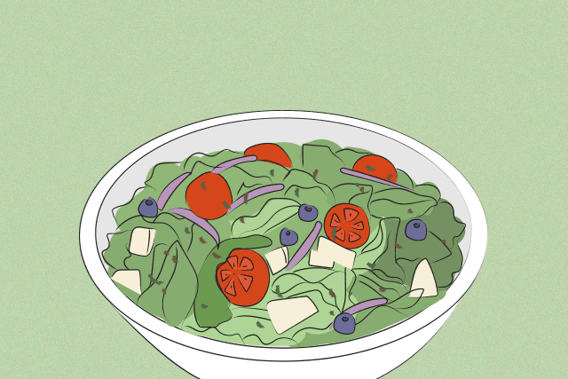

Ceasar Salad Recipe

Description
Ceasar salad is a classic and refreshing salad that features
crisp romaine lettuce, garlicky dressing, and flavorful toppings like croutons
and grated Parmesan cheese. It's a popular choice for a light and satisfying meal or as a side dish.
Ingredients
Here are the main ingredients used in this dish:
- Romaine lettuce (washed and torn into bite-sized pieces)
- Croutons (store-bought or homemade)
- Grated Parmesan cheese
- Caesar dressing(store-bought or homemade)
- Anchovy fillets for traditional Caesar flavor (optional)
- Anchovy fillets for traditional Caesar flavor (optional)
Steps
Here are the steps to create the perfect dish:
- In a large salad bowl, add the torn romaine lettuce.
- Sprinkle the croutons over the lettuce.
- Drizzle the Caesar dressing over the salad, starting with a small amount and adding more as desired.
- Toss the salad gently to coat the lettuce and croutons evenly with the dressing.
- Add the grated Parmesan cheese to the salad and toss again.
- If using anchovy fillets, chop them finely or mash them with a fork, and add them to the salad for a traditional Caesar taste. (optional)
- Add other toppings like hard-boiled eggs, cherry tomatoes, or grilled chicken for added variety and protein. (optional)
- Give the salad a final toss to combine all the ingredients.
Serve immediately and enjoy your refreshing Caesar salad!
